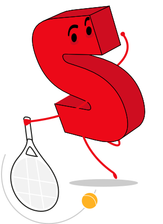
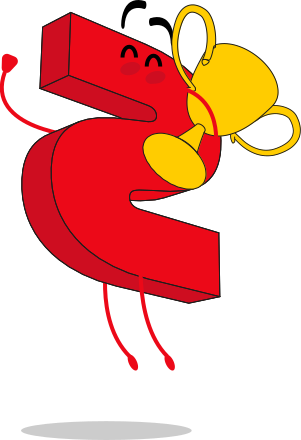
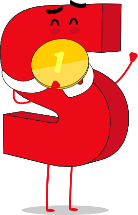
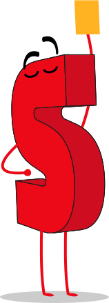
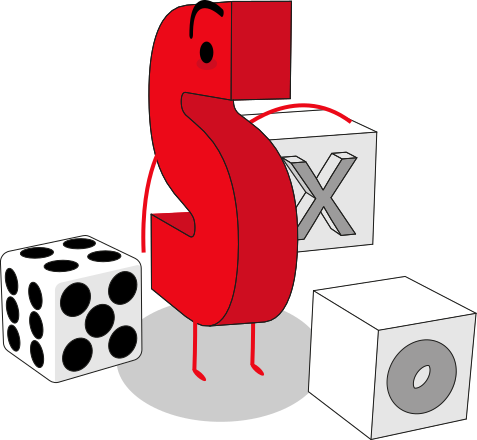
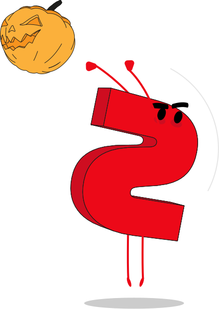
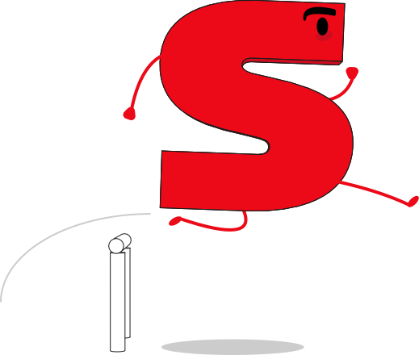
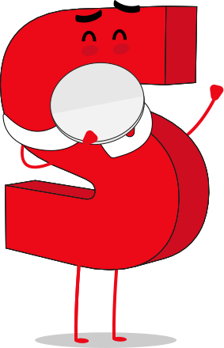

Case study 06 · SPORT · Visual craft
SPORT Illustrations — Building character without breaking the product language.
The role of this case is deliberately different from 42DS or SPORT Cards: it shows art direction, composition and visual identity through the original illustration assets themselves.
- Focus
- Visual design · art direction
- Context
- SPORT editorial ecosystem
- Evidence
- Original SVG / image assets
- Portfolio role
- Visual craft
Intent
Distinctive enough to have character. Flexible enough to live inside a product.
The set covers different editorial and product needs — sport, engagement, newsletter, subscription and utility contexts — without turning every asset into a separate visual universe.
The set
Seventeen assets, one grammar.
Each one answers a specific product moment — a survey, a failed process, a subscription, a match day — with the same silhouette, the same palette and the same register of humour.












Visual grammar
Variation comes from scenario. Consistency comes from the visual grammar.
Four rules hold the set together. They are what let a Halloween asset and a failed-process asset belong to the same family.
Simple, bold forms keep the asset legible at editorial scale.
Colour reinforces SPORT identity without overwhelming the surrounding UI.
Small narrative gestures make functional moments feel less generic.
Assets can work as standalone illustrations, empty states or contextual support.
Takeaway
Systems thinking should make visual expression easier to scale — not flatten it.
The grammar is what makes seventeen assets readable as one set; the scenarios are what keep them from looking like seventeen copies.